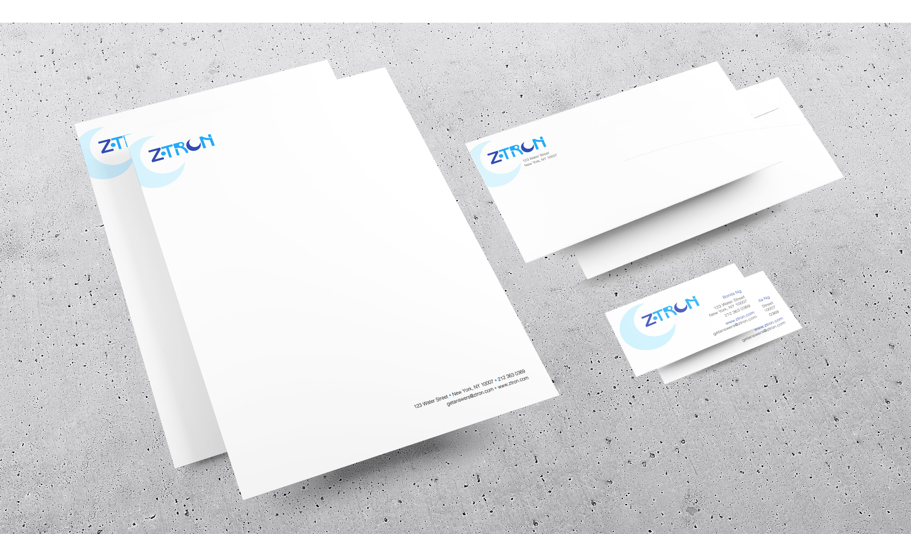
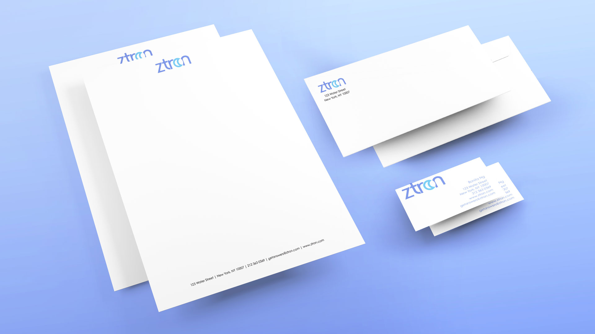
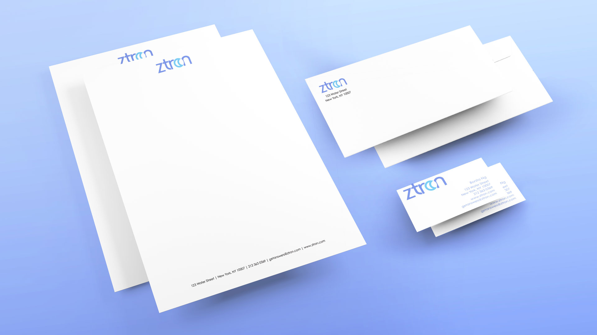

Ztron is the online haven for astrology enthusiasts. There are two logotypes for this website. The first is designed to emulate the style of the 1990s. The second updates the first for a more modern look.

The new logotype is lighter in weight and color to mirror more contemporary design. The moon of the old logotype is transformed into a solar eclipse, indicating the passing of time since Ztron's founding and the importance of timing in astrology.
 
